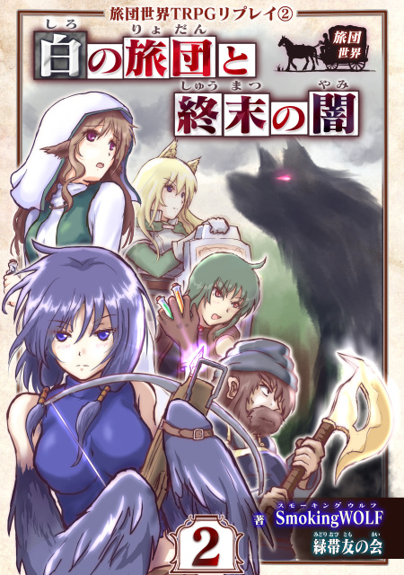

|
『＜自家製＞片道勇者TRPGリプレイ』の その後が語られる！ 『旅団世界TRPGリプレイ 2巻』発売！ |
さあ、やってきました例年通りのエイプリルフール新発表！
今年は自作TRPGリプレイ電子書籍『旅団世界TRPGリプレイ』の2巻発売のお知らせです！
なんと今回のお話は『＜自家製＞片道勇者TRPGリプレイ』のその後が舞台！
| １ | 読んでみる！ |
ということで2巻の販売ページはこちら！
↓
| Amazon販売ページ 旅団世界TRPGリプレイ②『白の旅団と終末の闇』  Kindle版 ￥924 Kindle Unlimitedなら￥0 |
※これはKindle電子書籍です。スマートフォンやPCに「Kindle（キンドル）」アプリを入れて読むことができます。
※Kindle Unlimitedご加入者なら無料で読めます。
※冒頭から10％ほどをブラウザ上から試し読みすることもできます！
| ２ | 内容の紹介！ |

今回のあらすじや、今回の登場キャラクターなど！
| ◆2巻のあらすじ | ||
|
それは6人の旅人が『闇』に立ち向かった冒険の時代から8年後のこと。 世界を覆わんとする『闇』の脅威が人知れず討ち払われた後、その島『シールダルク島』では穏やかな日々が続いていました。 シールダルク島の端には、3つの獣人たちの国がありました。 イヌビトの国エルスベルグ、ネコビトの国イフバール、トリビトの国フェザーランドです。 昔は国々のあいだで争ったこともありましたが、今は3国の王族が協力しあい、平和な日々が続いていました。 ところがある日、フェザーランドで暴動が起き、国の領主が殺されてしまう事件が起きます！ 領主の娘でありながら隠れ住むように暮らしていた半人半鳥の少女クバは、半獣人の集落へと逃げ延びるべく、街を離れます……。 その頃、『大陸』では半獣人の薬師ネムリが、今回の物語の主人公たちであるリゼットらが設立した『ホワイトドーン旅団』に志願しようとしていました。 彼女は『闇』が生まれた島、シールダルク島の出身だと言います。 ネムリは、何らかの目的でその島へ渡ろうとしているようなのですが……。 また、リゼットたち『ホワイトドーン旅団』も『旅団大会』に参加すべく、シールダルク島へと渡ることになります。 しかし「旅団大会」で盛り上がりを見せる中、よみがえりつつある『闇』の気配が、徐々に島に立ちこめていき……。 そして現れた『闇』は、人類が止めるにはあまりにも強大すぎる敵でした。 絶望的な状況の中、それでもホワイトドーン旅団は『闇』に立ち向かっていきます。 それがたとえ、一つの命では勝てない戦いだとしても――。 |
| ◆登場キャラクター！ | ||||||||||||||||||||||||
2巻のリプレイで登場するプレイヤーキャラクターを、過去の実績と合わせてご紹介！
そして以下は今回の新NPCキャラクター！
|
||||||||||||||||||||||||


| ◆その他のぶっちゃけ説明！ | ||
|
＜旅団世界リプレイ2巻で自家製リプレイのキャラが出てくるの！？＞ 『旅団世界TRPGリプレイ 2巻』では、キャラクター面だと前述のように「半獣人女子を拾ってきちゃう系男性」っぽい人とか「某ネコ獣人」っぽい元PC(プレイヤーキャラクター)が登場します！ まともに会話があった元PCは3人くらいです。 （「イメージ的にこのPCが罪のない少女を斬ると考えにくいよな！」ということで出番がNPCに差し替わったり、タイミングが悪くて出せなかったPCはいました、ごめんね……） ＜舞台は自家製片道TRPGのラストマップ付近！＞ また、「冒険の舞台」に関しては自家製からほぼ引き継ぎです！ 比較した図は以下の通り！ 左が自家製片道勇者、右が旅団世界2巻の舞台となっております。よく見ると……。 
なお、2巻を読んでくださった人の中に当時のマップや登場人物を覚えているかたがいらっしゃって、GMがこっそり大喜びしていました。 ＜その他＞ Q. 1巻読んでないけどいきなり2巻から読んで大丈夫！？ 大きなお話としては2巻だけでまとまっているので、2巻からでもお楽しみいただけるようになっています！ （なお、ルール説明がより詳しく書かれているのは1巻です） ・1巻のNPCがからんでくる度合いは、シーン的には10％以下（情報量的には5％以下）で、話題にあがる過去キャラや過去話、文脈が分かりにくそうな部分には随時、補足説明を入れています。 ・ルールは、「2D（サイコロ2個）＋能力値」で行動がうまくいったかどうか出すスタイルは『＜自家製＞片道勇者TRPGリプレイ』通り！ 戦闘ルールだけ＜自家製＞とちょっと違いますが、実際のリプレイを見ればすぐ慣れると思います。 これらの点だけあらかじめご理解いただければ、2巻からでもおおよそ問題なくお楽しみいただけると思います！ Q.ところで自家製リプレイにいた「あの半獣人の少女」は出ますか！？ 
|
| ３ | 過去のお話 |
| ◆「1巻などの『その前』が気になるんだけど！？」という人へ！ | |||
1巻が気になる！
無料でなにか読みたい！旅団世界TRPGリプレイがどんなものか、まだ一度も読んだことのない方はこちら！！すべての始まり、第1話を読むことができます！ サイコロが巻き起こすTRPGらしいカオス展開をご覧あれ！ ↓ 旅団世界TRPGリプレイ 『チュートリアル』回（無料） （去年から公開しているリプレイです） そんなことよりルールだぜ！(？)TRPGプレイ経験者向け！ いきなり『旅団世界TRPG』のルールに興味があるぜ！ というマニアックな人はこちら！ ルールは無料公開です。↓ 『旅団世界TRPG 基本ルールページ』（無料）  ルールページはスマートフォンにも対応！ 入力可能なPDFキャラクターシートもご用意しておりますので、必要に応じてご利用ください。 そもそも<自家製>片道勇者TRPGって！？そもそも今回のお話の元となった自家製リプレイが気になる方へ！「＜自家製＞片道勇者TRPGリプレイ」とはエイプリルフール企画で作った作者の自作ルールによる片道勇者リプレイです。 （後に冒険企画局さまによる商業書籍の「片道勇者TRPG」が作られたので私が作った方を＜自家製＞と読んでいます） 今回の新刊は、こちらをご存じなくとも全く問題なくお楽しみいただけますが、知ってるとニヤリとできる話がちょいちょい出てきます。 ● <自家製>片道勇者TRPGリプレイ 全14話＋後日談
「TRPGの面白さを知ることができた！」「個性豊かなプレイヤーキャラが面白い」というコメントをいただけた自慢のリプレイ！
個性豊かなPCたちの、涙あり、笑いありの後戻りできない冒険譚です！（※ただし爽やかに打ち切り風）
|
|||

| ４ | あとがき |
| ◆最後に | ||
|
そんなわけで、ようやく＜自家製＞片道勇者TRPGリプレイの『その後』のお話をリリースすることができました！ 2013年、エイプリルフール企画として始まった『＜自家製＞片道勇者TRPGリプレイ』は、私にとって初めての連載TRPGリプレイだったこともあり、最終的には続けるためのモチベーションやアイデアが尽きてしまい、打ち切り風の終わりを迎えてしまいました。 ですが＜自家製＞の『その後』を何かしらの形で出したいな、とはぼんやり考えていまして、旅団世界TRPGリプレイが始まってから、こういう形で『＜自家製＞のその後』を描かせていただく案をずっと考えていました（たまたま最初に、＜自家製＞で出たシノビのテレサと夫ギリアムも使っていましたしね）。 さて、その＜自家製＞リプレイの『その後』なのですが、今回のお話では、かつて『闇』に覆われつつあった＜自家製＞の世界は、ロイスたち6人の旅人たちの手によって「一度は救われた」ことになっています。 ですが語られなかったその「結末」では、『闇』そのものを倒せたわけでも、永遠の封印をほどこせたわけでもありませんでした。 そして今回の物語は、そんな『その後』に突入していく新たなプレイヤーキャラたちのお話！ 名前を聞けば思い出すかもしれない「国」や「NPC」たちも登場し、かつての旅人たちの手によって一度は平和になった世界と、再びおとずれる『闇』の危機が描かれます。 気になった方はよければぜひ、お楽しみください！ このお話の後も、自家製の旅人たちは、ある者は誰かを助け続けることをやめず、ある者は旅をし続け、ある者は行方不明になっていることでしょう。 彼らの冒険は、私たちが想像し続ける限り、終わることなく続いていきます……。 |
今回の紹介は以上です！
ここまで読んでくださって本当にありがとうございました！
歩みは非常にゆっくりとですが、
『旅団世界TRPGリプレイ』シリーズの今後の展開もお楽しみに！